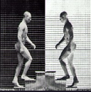

|
 |
|
| B3 |
Use B3 gamut 0.5 1.5 1.0 2.0 3.0 4.0 5.0 6.0 8.0 |
|
| Harm |
Harmonic spectrum 1.0 20 3.0 4.0 5.0 6.0 7.0 8.0 9.0 |
|
| Odd |
Odd harmonics only 0.5 1.5 2.5 3.5 4.5 6.5 7.5 8.5 9.5 |
|
| Prime |
Mostly prime 0.5 1.0 1.5 2.5 3.5 5.5 6.5 8.5 9.5 |
|
| Rnd 1 |
Generate harmonic gamut with a few non-harmonic tones. |
|
| Rnd 2 |
Generate random frequencies |
|
| Klstr |
Generate clusters of partials - good for chorusing |
|
| Detune |
Randomly detune 1 or 2 partials. |
| Scan Rate |
||
| Mod Rate |
Delay time for series delays. |
|
| Mod Spread |
Variation in series delay times. |
|
| Delay |
Global series delay times |
|
| Delay Mod |
Modulation of global delay time |
|
| Cross Mix |
Cross-mix amount for opposing delays |
|
| Efx Mix |